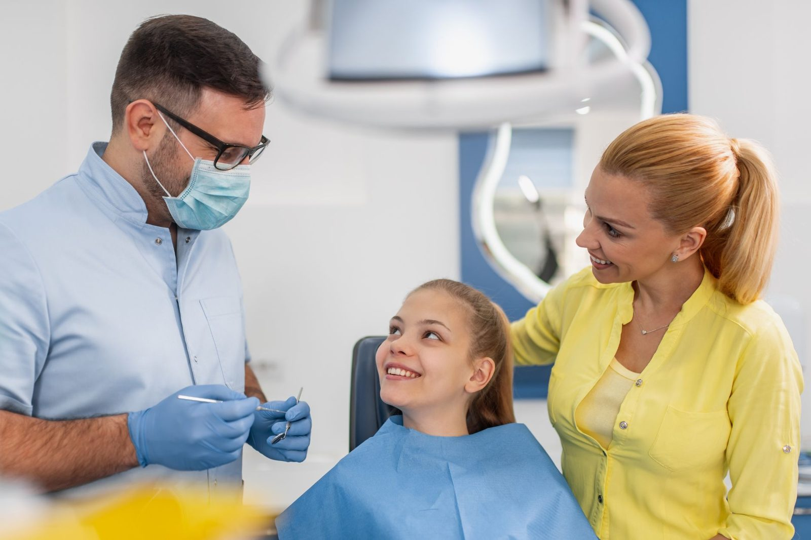
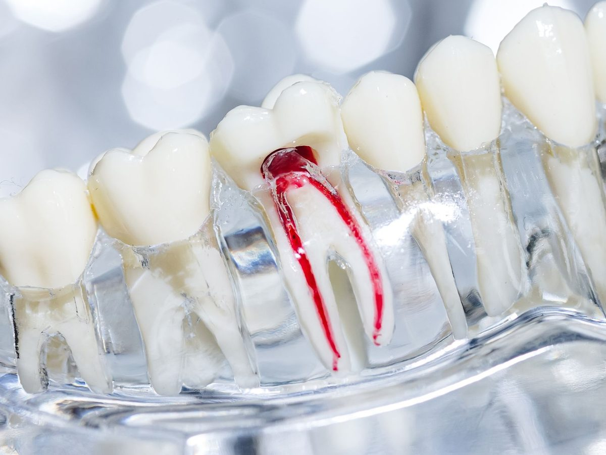
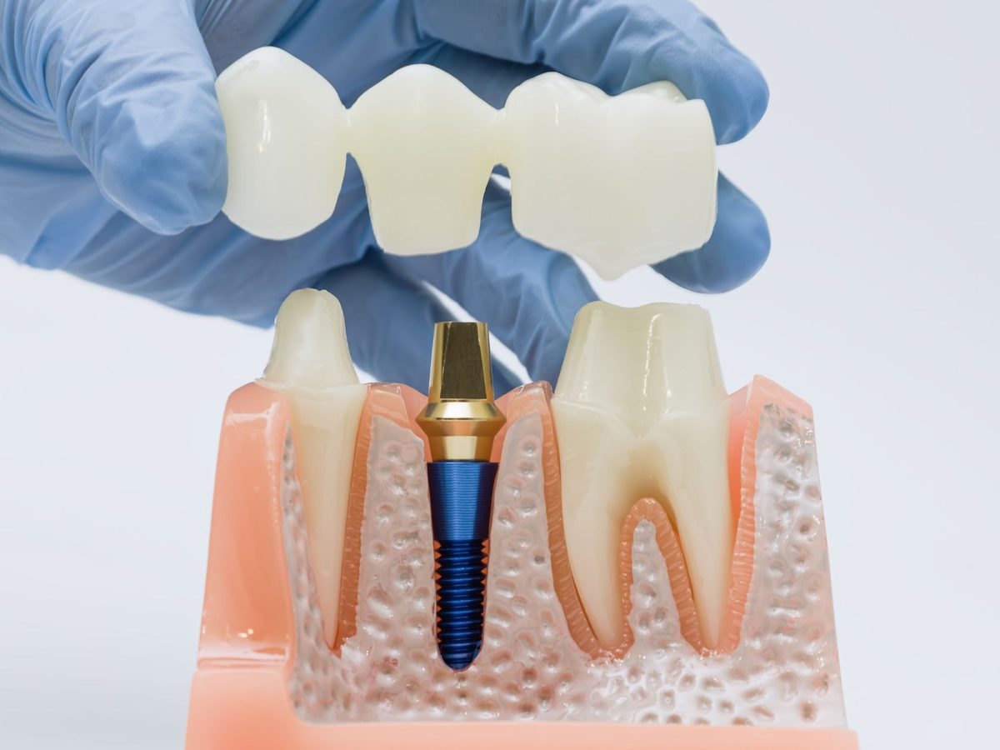
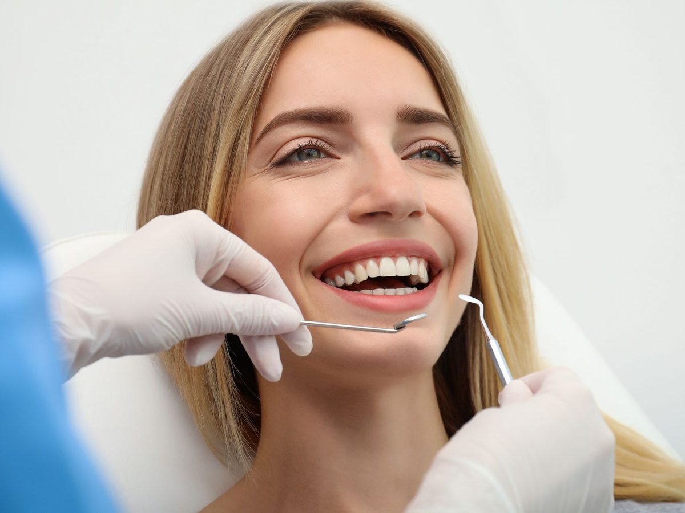
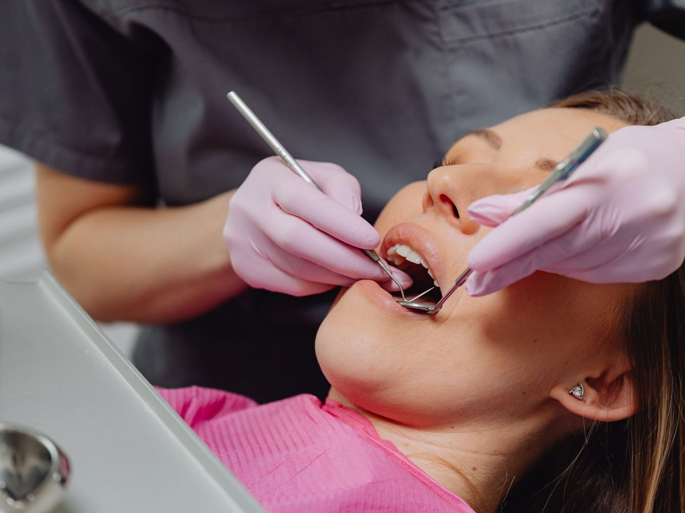
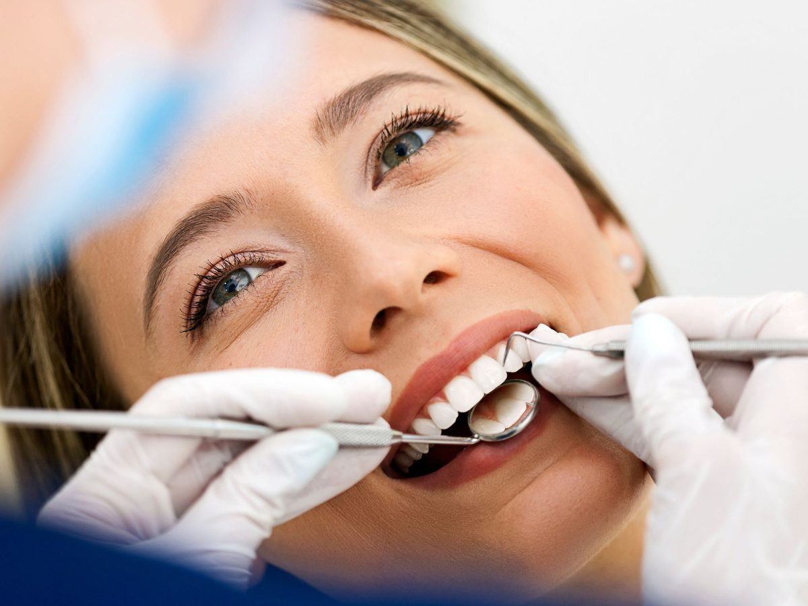

13 Cronulla Street, Cronulla NSW 2230
13 Cronulla Street, Cronulla NSW 2230Register your interest
Be first to book when our doors open on 16 November. Founding patients get priority appointments and exclusive opening offers.
No obligation. We’ll only contact you about opening news and your booking.
The Cronulla Dentists
TAKE YOUR TIME, ASK ANYTHING
Considered dental care for families across the Sutherland Shire, at 13 Cronulla Street.
A Pace That Suits You
Appointments here are booked with enough room to stop, check in and carry on when you are ready. Raise a hand and we stop, immediately.
You Will Understand The Answer
We tell you what we found and what it means, without the technical shorthand. If it is easier to show you on a screen or hand you a mirror, we will do that instead of talking at you.
Time To Ask Questions
There is no such thing as a silly question about your own mouth. Ask what something costs, why it is recommended, or what happens if you wait.
We Will Tell You When To Wait
Not everything we find needs treating straight away. Where keeping an eye on something is the sensible option, that is what we will recommend, and we will explain why.
Opening 16 November 2026. Register your interest for priority booking.
Open until 7pm Mondays. Early appointments from 7am Fridays. Nervous patients are always welcome. We take time to explain your options clearly.

In the Middle of Cronulla Street
Being in the centre of town changes what a dental appointment costs you in time. A check-up can sit inside a trip you were already making rather than becoming its own event in the day.
We are a short walk from Cronulla station at the end of the T4 line, so the train works for anyone coming down the line. Woolooware, Burraneer, Greenhills Beach, Caringbah South, Taren Point and Kurnell are all a few minutes away by car. For Bundeena residents, the wharf is a short walk from us, so an appointment can be planned around the ferry.
Inside, the practice has been fitted out to feel like somewhere you can sit without bracing yourself. The practice is led by Dr Ram Nathwani and Dr Lorna Gladwin, who between them bring more than twenty years of clinical experience across Sydney and the United Kingdom.
Schedule your visit. Call (02) 8599 9815.

Care for every stage
General Dentistry
Check-ups, cleans, X-rays and fillings. The routine work that keeps small problems small.
Read moreChildren’s Dentistry
Short, calm first visits, and the Child Dental Benefits Schedule explained properly.
Read moreCosmetic Dentistry
Whitening, veneers and conservative options for the appearance of your smile.
Read moreRestorative Dentistry
Crowns, bridges, implants and dentures to repair and replace damaged or missing teeth.
Read moreTreatments Available at Cronulla
Most of what you need, in one place, from the same team.





Before you book
Your First Visit
An examination, a professional clean, X-rays where clinically indicated, and a conversation about what we found. You will leave knowing what your options are, including the option of doing nothing for now.
Bringing The Kids
Bring them earlier than you think, around the first birthday. There is almost nothing to examine at that age, which is exactly the point. The dentist becomes ordinary before there is any reason for it not to be.
Gum Health
Bleeding when you brush is not from brushing too hard. It is the earliest sign of gum disease and the stage that can still be fully reversed, which is why we measure gums rather than glance at them.
Sports Mouthguards
Between junior league at Woolooware and everything played across the Shire on weekends, we make a lot of these. A custom guard stays in, which means it actually gets worn.
Grinding And Clenching
Flattened edges, jaw ache on waking, headaches around the temples. Most people have no idea they grind until the wear shows up. A night guard takes the damage instead of your teeth.
Dentures
Full, partial and implant stabilised. Modern dentures fit considerably better than their reputation suggests, and we will be straight with you about the adjustment period.
No Surprises on the Invoice
You will have a written estimate before any treatment begins, with your likely out of pocket amount after any health fund rebate.
Where a plan has several parts, we can prioritise what is urgent and schedule the rest over months.
Why We Opened in Cronulla
A steady number of people in Cronulla, Woolooware, Burraneer and Greenhills Beach were travelling out of the area for their dental care, and Bundeena residents were doing it by ferry. Opening on Cronulla Street puts the practice where those patients already are.
We wanted to run a practice the way we think dentistry should be run, which in practice means longer appointments, written estimates before treatment begins, and recommendations we would be comfortable defending to any other dentist.
It is a small team by design. You will see the same dentist each visit, which matters more than it sounds when treatment runs across several appointments.
It would be a pleasure to meet you. Call or email us and choose a time that suits.
Happy healthy smiles.